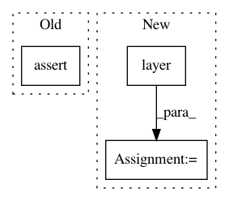

54596495ee3297a03b5d69caaac37ac64e9b6f9f,stellargraph/layer/graph_attention.py,GAT,__call__,#GAT#Any#,249
Before Change
assert isinstance(x_inp, list), \
"input must be a list, got {} instead".format(type(x_inp))
assert len(x_inp) == 2, \
"input should contain 2 elements (features and adjacency matrix), got {} elements".format(len(x_inp))
x = x_inp
for l, F_ in enumerate(self.layer_sizes):
// number of attention heads for layer l:
After Change
// A = Reshape((N,))(A)
for layer in self._layers:
x = layer([x, A])
return self._normalization(x)
In pattern: SUPERPATTERN
Frequency: 3
Non-data size: 3
Instances
Project Name: stellargraph/stellargraph
Commit Name: 54596495ee3297a03b5d69caaac37ac64e9b6f9f
Time: 2019-01-09
Author: yuriy.tyshetskiy@data61.csiro.au
File Name: stellargraph/layer/graph_attention.py
Class Name: GAT
Method Name: __call__
Project Name: tensorflow/tensorflow
Commit Name: afd954e65f15aea4d438d0a219136fc4a63a573d
Time: 2021-05-04
Author: mattdangerw@google.com
File Name: tensorflow/python/keras/layers/preprocessing/normalization_test.py
Class Name: NormalizationTest
Method Name: test_broadcasting_during_direct_setting
Project Name: mozilla/TTS
Commit Name: b76a0be97a8c67df494d5767e75d211184cb2787
Time: 2020-10-29
Author: erogol@hotmail.com
File Name: TTS/vocoder/models/wavegrad.py
Class Name: Wavegrad
Method Name: forward